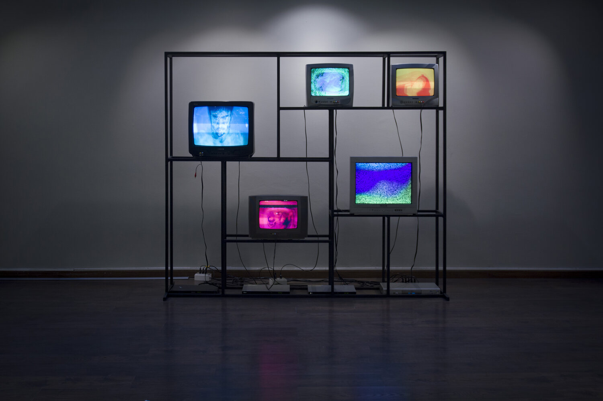
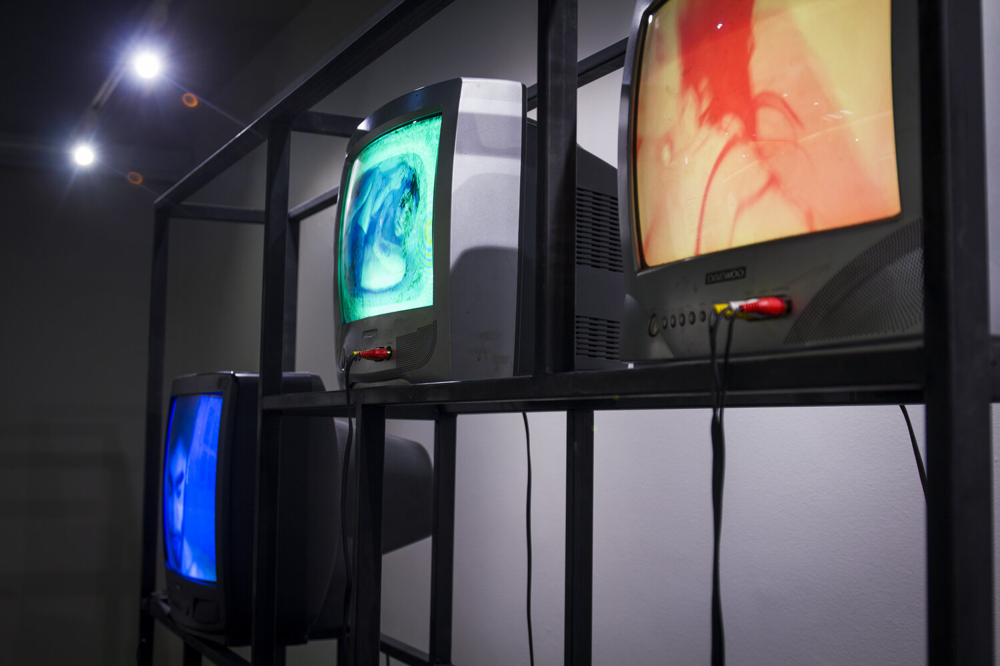

SumersionesSubmersions (Sumersiones)
Sumersiones es una videoinstalación que reflexiona, desde una perspectiva cyborg, en torno al cuerpo-tecnología. Se muestra, a través de cinco televisores y dvds antiguos, a tres personas sumergidas en el agua. De esta forma, el agua actúa como elemento fusionador entre orgánico e inorgánico, difuminando los límites de la piel y expandiéndose al plano tecnológico de los dispositivos.
Los artefactos se encuentran dispuestos sobre una estructura metálica que deja ver los cables y conexiones que hacen que la instalación funcione. Cada televisor emite un track sonoro, de manera que juntos generan un paisaje sonoro orgánico que varía a medida que los videos, de disímil duración, se desfasan. Cuerpo se torna agua, cable, metal, pantalla, dvd, sonido y plástico.
Sumersiones is a video installation that reflects, from a cyborg perspective, on the body-technology relationship. Through five old televisions and DVD players, three people are shown submerged in water. Water acts as a fusing element between the organic and the inorganic, blurring the limits of the skin and expanding into the technological plane of the devices.
The devices sit on a metal structure that exposes the cables and connections that make the installation work. Each television emits its own sound track, so that together they generate an organic soundscape that shifts as the videos, of differing lengths, fall out of sync. Body becomes water, cable, metal, screen, DVD, sound and plastic.

